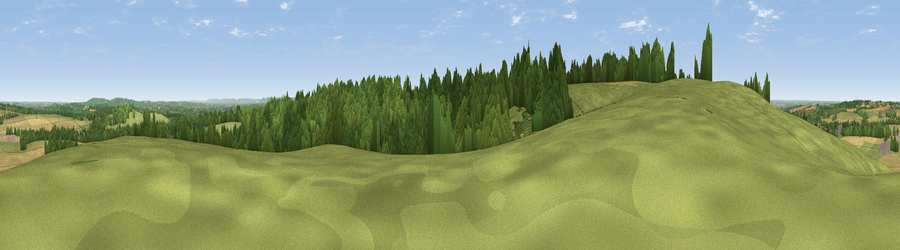

Thorn Hill
#18876 in England · top 24% of its area beats it · near HorspathWhere it is
The exact computed spot (SP 57247 06381). Click the marker for map links.
The view, rendered

A 360° render of this exact spot computed from the terrain model, tree cover and land cover — summer colours, afternoon light, calibrated against photographs of famous viewpoints. Real trees, hedges and buildings will differ in detail.
The panorama
Grey silhouette: terrain skyline in each direction (720 bearings, Earth curvature and refraction included). Dashed green: skyline with trees (+15 m) and buildings (+8 m) as obstacles. Blue strip: how far the ground is visible on each bearing.
Where the view opens
Wedge length = distance to the farthest visible ground on that bearing (vegetation-aware). Rings at 10, 25 and 50 km.
What fills the view
41% woodland · 38% grassland · 20% cropland · 1% built-up
Angular shares of the visible panorama (visual magnitude), not map area. Landscape diversity 0.48 (0–1 Shannon).
Key numbers
More beautiful places nearby
The staircase of upgrades: each row has a higher view potential than everything closer. Driving times are estimates from straight-line distance, calibrated against real road routing — check an actual route before setting out.
| Place | Direction | Drive | Score |
|---|---|---|---|
| Viewpoint near Horspath | W · 1 km | ~3 min | 61.6 |
| Viewpoint near Boarstall | NE · 10 km | ~20 min | 61.7 |
| Muswell Hill | NE · 11 km | ~21 min | 67.9 |
| Round Hill | S · 14 km | ~25 min | 70.1 |
| Viewpoint near Lewknor | SE · 18 km | ~31 min | 70.8 |
| Viewpoint near Lewknor | ESE · 18 km | ~31 min | 74.4 |
| Coombe Hill Monument | E · 28 km | ~44 min | 75.5 |
| Viewpoint near Woolstone | SW · 34 km | ~52 min | 76.7 |
51.75321, -1.17208 · source: osm peak · position refined by local search. Computed location — check access rights before visiting.